Next: Continuation of codim 2 Up: Continuation of torus bifurcation Previous: Torus bifurcation initialization Contents
A torus bifurcation in this system is described in the manual [14]. It is found by
starting an equilibrium curve from the trival equilibrium point (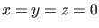)
at 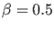, 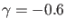, 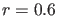, 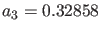,  , 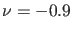. The free
parameter is
, 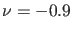. The free
parameter is  and the branch is the trivial one (). On this branch a Hopf bifurcation
is detected at 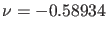. On the emerging branch of limit cycles a branch point of
limit cycles is found; by continuing the newly found branch one detects a
torus bifurcation of periodic orbits.
and the branch is the trivial one (). On this branch a Hopf bifurcation
is detected at 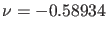. On the emerging branch of limit cycles a branch point of
limit cycles is found; by continuing the newly found branch one detects a
torus bifurcation of periodic orbits.
We proceed in a somewhat different way; to avoid the branch point of periodic orbits we start with a
slightly perturbed system where the last equation of (80) is replaced by
The trivial solution is replaced by the equilibrium solution
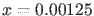, 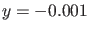, 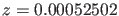 of the perturbed system torBPC.m and we compute a branch of equilibria with free
parameter  in the now standard way (note that
in the now standard way (note that  is the sixth parameter,
is the sixth parameter,  is the seventh):
is the seventh):
>> p=[0.5;-0.6;0.6;0.32858;0.93358;-0.9;0.001]; >> [x0,v0]=init_EP_EP(@torBPC,[0.00125;-0.001;0.00052502],p,[6]); >> opt=contset; opt= contset(opt,'Singularities',1); >> opt=contset(opt,'MaxNumPoints',10); >> [x,v,s,h,f]=cont(@equilibrium,x0,[],opt); first point found tangent vector to first point found label = H , x = ( 0.005604 -0.001000 0.002702 -0.589286 ) First Lyapunov coefficient = -4.548985e-001 elapsed time = 0.1 secs npoints curve = 10A Hopf point is found for 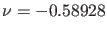 for the state values 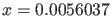, , 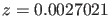. We start a curve of periodic orbits from this Hopf point, using 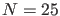 test intervals and
>> x1=x(1:3,s(2).index);p(6)= x(end,s(2).index); >> [x0,v0]=init_H_LC(@torBPC,x1,p,[6],0.0001,25,4); >> opt=contset; opt= contset(opt,'Singularities',1); >> opt=contset(opt,'MaxNumPoints',50); >> opt=contset(opt,'Multipliers',1); >> [x,v,s,h,f]=cont(@limitcycle,x0,v0,opt); first point found tangent vector to first point found Limit point cycle (period = 8.411855e+000, parameter = -5.844928e-001) Normal form coefficient = 1.788080e-001 Neimark-Sacker (period = 8.861103e+000, parameter = -5.957506e-001) Normal form coefficient = 2.674115e-003 Period Doubling (period = 9.256846e+000, parameter = -6.146817e-001) Normal form coefficient = -6.068973e-003 elapsed time = 28.3 secs npoints curve = 50 >> plotcycle(x,v,s,[1 2]);
The previous computations are done by running the script testtorBPC1, including drawing Figure 23 in which the Hopf point and the three bifurcations of limit cycles are clearly visible. The axis labels were added manually.
In particular, we detect a torus bifurcation point at 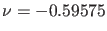.
To recover the torus bifurcation point of (80) we continue the torus bifurcation
in two parameters 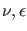. With the aid of the user function  we will now locate a NS bifurcation of (80).
The starting vector x1 is calculated from the NS on this branch using init_NS_NS. Continuation is done using a call to the standard continuer with neimarksacker as curve definition file:
we will now locate a NS bifurcation of (80).
The starting vector x1 is calculated from the NS on this branch using init_NS_NS. Continuation is done using a call to the standard continuer with neimarksacker as curve definition file:
p=[0.5;-0.6;0.6;0.32858;0.93358;-0.9;0.001]; x=[0.00125;-0.001;0.00052502]; [x0,v0]=init_EP_EP(@torBPC,x,p,[6]); opt=contset; opt=contset(opt,'Singularities',1); opt=contset(opt,'MaxNumPoints',10); [x,v,s,h,f]=cont(@equilibrium,x0,[],opt); x1=x(1:3,s(2).index); p(6)=x(end,s(2).index); [x0,v0]=init_H_LC(@torBPC,x1,p,[6],0.0001,25,4); opt=contset; opt=contset(opt,'Singularities',1); opt=contset(opt,'Multipliers',1); opt=contset(opt,'MaxNumPoints',50); [x,v,s,h,f]=cont(@limitcycle,x0,v0,opt); [x1,v1]=init_NS_NS(@torBPC,x,s(3),[6 7],25,4); opt=contset; opt=contset(opt,'VarTolerance',1e-4); opt=contset(opt,'FunTolerance',1e-4); opt=contset(opt,'Userfunctions',1); UserInfo.name='epsilon0'; UserInfo.state=1; UserInfo.label='E0'; opt=contset(opt,'UserfunctionsInfo',UserInfo); opt=contset(opt,'Backward',1); opt=contset(opt,'MaxNumPoints',16); [xns1,vns1,sns1,hns1,fns1]=cont(@neimarksacker,x1,v1,opt); plotcycle(xns1,vns1,sns1,[1 2]);
This continuation is done by running the script testtorBPC2. The output is the following:
>> testtorBPC2 first point found tangent vector to first point found label = H , x = ( 0.005604 -0.001000 0.002702 -0.589286 ) First Lyapunov coefficient = -4.549030e-01 elapsed time = 0.7 secs npoints curve = 10 first point found tangent vector to first point found Limit point cycle (period = 8.411870e+00, parameter = -5.844928e-01) Normal form coefficient = 1.788366e-01 Neimark-Sacker (period = 8.861100e+00, parameter = -5.957504e-01) Normal form coefficient = 2.674115e-03 Period Doubling (period = 9.256846e+00, parameter = -6.146817e-01) Normal form coefficient = -6.068982e-03 elapsed time = 11.5 secs npoints curve = 50 first point found tangent vector to first point found label = E0, x = ( 0.046835 0.141698 0.046209 ... ... 0.141698 0.046209 8.793572 -0.591612 -0.000006 0.822406 ) elapsed time = 9.1 secs npoints curve = 16We note that the point with label E0 is a torus bifurcation point of (80) with 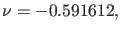 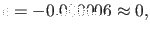 and period 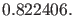 The orbits are shown in Figure 24. The axis labels were added manually.
Finally, we continue numerically the NS orbit with two free parameters 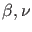 and find, interestingly, that the NS orbit shrinks to a single point. The results are plotted using the standard plot function plotcycle where the fourth argument is used to select the coordinates. The plot is shown in Figure 25 (the axis labels were added manually). This computation is executed by running testtorBPC3:
p=[0.5;-0.6;0.6;0.32858;0.93358;-0.9;0.001]; x=[0.00125;-0.001;0.00052502]; [x0,v0]=init_EP_EP(@torBPC,x,p,[6]); opt=contset; opt=contset(opt,'Singularities',1); opt=contset(opt,'MaxNumPoints',10); [x,v,s,h,f]=cont(@equilibrium,x0,[],opt); x1=x(1:3,s(2).index); p(6)=x(end,s(2).index); [x0,v0]=init_H_LC(@torBPC,x1,p,[6],0.0001,25,4); opt=contset; opt=contset(opt,'Singularities',1); opt=contset(opt,'Multipliers',1); opt=contset(opt,'MaxNumPoints',50); [x,v,s,h,f]=cont(@limitcycle,x0,v0,opt); [x2,v2]=init_NS_NS(@torBPC,x,s(3),[1 6],50,4); opt=contset; opt=contset(opt,'VarTolerance',1e-4); opt=contset(opt,'FunTolerance',1e-4); opt=contset(opt,'MaxNumPoints',50); [xns2,vns2,sns2,hns,fns]=cont(@neimarksacker,x2,v2,opt); plotcycle(xns2,vns2,sns2,[1 2]);The output is as follows:
>> testtorBPC3 first point found tangent vector to first point found label = H , x = ( 0.005604 -0.001000 0.002702 -0.589286 ) First Lyapunov coefficient = -4.549030e-01 elapsed time = 0.0 secs npoints curve = 10 first point found tangent vector to first point found Limit point cycle (period = 8.411870e+00, parameter = -5.844928e-01) Normal form coefficient = 1.788366e-01 Neimark-Sacker (period = 8.861100e+00, parameter = -5.957504e-01) Normal form coefficient = 2.674115e-03 Period Doubling (period = 9.256846e+00, parameter = -6.146817e-01) Normal form coefficient = -6.068982e-03 elapsed time = 14.1 secs npoints curve = 50 first point found tangent vector to first point found elapsed time = 124.5 secs npoints curve = 50Here 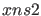 is a 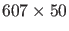 matrix. The last four components of each column are, in that order, the period of the orbit, the values of the two free parameters, and the value of the additional variable